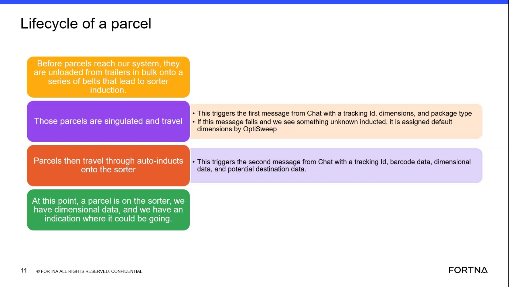

| Procedure ID | proc_check_whether_an_unknown_inducted_parcel_was_assigned_default_dimensions_v1 |
|---|---|
| Title | Check Whether An Unknown Inducted Parcel Was Assigned Default Dimensions |
| Procedure Type | diagnostic |
| Primary Role | L1_support |
| Support Safe | Yes |
| Validation Status | needs_sme_review |
| Merge Status | source_finalized |
Use this source-based diagnostic to verify whether a parcel matches the training-slide fallback case in which OptiSweep assigns default dimensions when the first message fails and an unknown parcel is inducted.
Use when reviewing parcel evidence or message history to determine whether a parcel may have received default dimensions under the source-described fallback condition: the first message failed and an unknown parcel was inducted.
Responsible role: L1_support
Instruction:
Review the available parcel case evidence and identify whether the parcel is described or evidenced as an unknown inducted parcel.
Expected result:
The parcel is either confirmed as an unknown inducted case or cannot be confirmed from available evidence.
Screens / Images:

Stop or Escalate If:
Responsible role: L1_support
Instruction:
Check the available evidence for the initial message associated with tracking ID, dimensions, and package type. Determine whether that first message failed or is absent in the evidence being reviewed.
Expected result:
The first message is either shown as failed or absent, or the evidence is insufficient to determine its status.
Screens / Images:
Stop or Escalate If:
Responsible role: L1_support
Instruction:
Using only the source-described fallback behavior, verify whether the parcel was assigned default dimensions by OptiSweep based on the combination of an unknown inducted parcel and failure of the first message.
Expected result:
You can conclude whether the parcel matches the source-described fallback case for default dimensions, or determine that the evidence is insufficient.
Screens / Images:
Stop or Escalate If:
Responsible role: L1_support
Instruction:
Record whether the parcel matches the source statement that ties default dimensions to the combination of first-message failure and an unknown inducted parcel. Include the slide evidence reference in the record.
Expected result:
A source-grounded diagnostic note is recorded without adding unsupported details.
Screens / Images:
Stop or Escalate If: